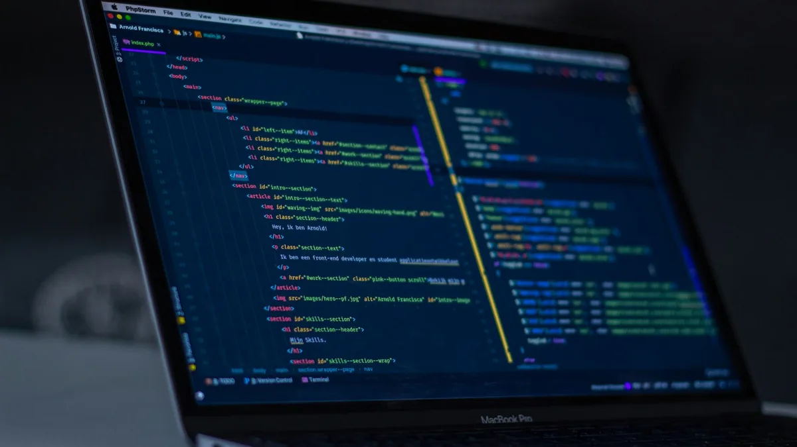

Bagi siswa SMK maupun mahasiswa tingkat awal di rumpun teknologi informasi, pertanyaan seputar perbedaan antara jurusan Informatika (Teknik Informatika / Ilmu Komputer) dan Rekayasa Perangkat Lunak (RPL / Software Engineering) sering kali menjadi topik perdebatan hangat. Kedua jurusan ini sama-sama berkutat dengan komputer, logika, dan baris kode, sehingga tidak jarang siswa menganggap keduanya identik.
Namun, ketika memasuki fase Praktik Kerja Lapangan (PKL) atau magang industri, perbedaan filosofis dan pendekatan kerja antara kedua disiplin ilmu ini akan terlihat sangat nyata. Memahami letak perbedaan penekanan materi dan target capaian proyek sangat penting agar peserta magang tidak salah memilih tempat belajar, serta mampu memaksimalkan potensi diri sesuai dengan arah karier impian mereka.
Definisi Fundamental: Ilmu di Balik Komputasi vs Seni Membangun Aplikasi
Untuk memahami perbedaannya secara jernih, kita perlu menengok kembali akar filosofi keilmuan dari masing-masing jurusan:
- Informatika (Computer Science / Informatics): Berfokus pada pemahaman fundamental tentang "bagaimana dan mengapa sebuah komputer dapat memproses informasi". Disiplin ini menitikberatkan pada cara berpikir komputasi (computational thinking), efisiensi algoritma, struktur data matematis, kecerdasan buatan, pemodelan sistem, dan optimasi pemecahan masalah kompleks.
- Rekayasa Perangkat Lunak (Software Engineering / RPL): Berfokus pada "bagaimana cara merancang, membangun, menguji, dan memelihara aplikasi perangkat lunak yang andal, efisien, dan mudah digunakan oleh manusia". Disiplin ini menitikberatkan pada penerapan prinsip rekayasa teknik (engineering), pola arsitektur kode (clean code), manajemen daur hidup perangkat lunak (SDLC), implementasi antarmuka, dan pengujian kualitas sistem.
Fokus Aktivitas Selama Program Magang Pengembangan Website
Dalam program magang terintegrasi Pengembangan Website berbasis Digital Marketing, peserta dari jurusan Informatika dan RPL tidak dipisahkan ke dalam ruang hampa, melainkan ditempatkan dalam satu ekosistem proyek yang saling melengkapi. Namun, tanggung jawab dan porsi tugas utama mereka memiliki spesialisasi masing-masing:
1. Porsi Peran Peserta Jurusan Informatika
Peserta magang jurusan Informatika diarahkan untuk menangani komponen logika inti, efisiensi alur data, dan optimasi algoritma web:
- Perancangan Skema Data & Alur Logika: Menyusun diagram relasi data (ERD), alur interaksi pengguna (user flow), dan logika validasi formulir pemesanan.
- Optimasi Kecepatan Algoritma (Performance Tuning): Menganalisis beban komputasi skrip JavaScript, meminimalkan pemanggilan DOM yang berulang, serta memastikan website merespons interaksi pengunjung dalam waktu kurang dari 100 milidetik.
- Analisis Data Pengunjung & Tracking Event: Mengonfigurasi parameter pelacakan analitik Google dan konversi interaksi WhatsApp untuk membaca pola perilaku pengunjung web secara kuantitatif.

2. Porsi Peran Peserta Jurusan Rekayasa Perangkat Lunak (RPL)
Sementara itu, peserta magang RPL fokus pada eksekusi teknis antarmuka, estetika kode, dan penyelesaian produk web yang siap pakai:
- Penerjemahan Desain Visual ke Kode (Slicing UI/UX): Mengubah rancangan desain antarmuka dari desainer grafis menjadi baris kode HTML5 semantik dan CSS3 modern yang responsif di smartphone, tablet, maupun layar desktop.
- Penerapan Framework & Komponen UI: Memanfaatkan framework industri seperti Bootstrap 5 untuk membangun navigasi navbar sticky, accordion FAQ interaktif, slider portofolio, dan modal dialog.
- Pengujian Kualitas & Kompatibilitas Peramban (Cross-Browser Testing): Menguji halaman web di berbagai browser populer (Chrome, Safari, Firefox, Edge) untuk memastikan tata letak dan tombol fungsi tidak bergeser.
- Refactoring & Dokumentasi Kode: Merapikan struktur folder proyek, memastikan penamaan variabel seragam, serta menyusun panduan teknis bagi anggota tim lainnya.
Tabel Komparasi Cepat: Informatika vs RPL
| Parameter Komparasi | Jurusan Informatika | Rekayasa Perangkat Lunak (RPL) |
|---|---|---|
| Fokus Utama | Algoritma, logika komputasi, struktur pemrosesan data, dan efisiensi sistem. | Arsitektur aplikasi, teknik koding antarmuka, kualitas kode, dan pengalaman pengguna. |
| Aktivitas di Web Magang | Merancang alur data, analitik konversi, optimasi skrip, dan logika formulir. | Slicing tampilan, pembuatan komponen UI responsif, integrasi CSS, dan uji fungsi. |
| Peralatan (Tools) | VS Code, Chrome DevTools, Git, JSON Schema, Database Tools. | VS Code, Bootstrap, CSS Preprocessor, Browser Emulators, GLightbox. |
| Target Portofolio | Studi kasus pemecahan masalah algoritma & efisiensi performa sistem. | Website responsif utuh siap tayang dengan tata letak rapi dan fungsional. |
| Arah Karier Masa Depan | Data Engineer, Backend Specialist, System Analyst, AI Engineer. | Front-End Developer, Full-Stack Developer, UI Engineer, QA Engineer. |
Bagaimana Kedua Jurusan Ini Berkolaborasi Menjadi Tim Juara?
Di dunia kerja sesungguhnya, tidak pernah ada proyek skala besar yang diselesaikan hanya oleh satu orang jenius yang bekerja sendirian. Keberhasilan peluncuran sebuah website bisnis selalu merupakan hasil orkestrasi harmonis antar talenta.
Ketika peserta Informatika dan RPL bekerja bersama:
- Informatika merancang cetak biru logika: Memastikan bagaimana data dari tombol Call-to-Action WhatsApp dikirimkan dengan parameter teks yang tepat, bagaimana skema microdata schema.org dipahami oleh Googlebot, dan bagaimana performa Core Web Vitals tetap berada di zona hijau.
- RPL mewujudkannya menjadi antarmuka nyata: Menerapkan estetika tata letak, warna aksen maroon yang konsisten, animasi transisi yang halus tanpa lag, serta navigasi mobile yang ramah sentuhan jempol pengguna smartphone.
"Informatika memberi otak dan logika cerdas pada sebuah website, sedangkan RPL memberi raga dan otot yang kuat agar website tersebut dapat beroperasi mulus di tangan pengguna nyata."
Kesimpulan: Mana Jurusan yang Paling Tepat untuk Anda?
Tidak ada pilihan yang salah antara Informatika dan Rekayasa Perangkat Lunak. Jika Anda tipe orang yang gemar memecahkan teka-teki logika, menyukai matematika komputasi, penasaran dengan cara kerja data, dan suka menganalisis alur abstrak di balik layar, maka Informatika adalah rumah yang sempurna bagi Anda.
Namun, jika Anda lebih menikmati proses melihat baris kode langsung berubah menjadi antarmuka visual yang nyata, senang mengutak-atik tata letak tombol, memperhatikan kerapian detail visual, dan ingin cepat membuat aplikasi yang bisa langsung dipamerkan kepada teman dan keluarga, maka Rekayasa Perangkat Lunak (RPL) adalah jalur yang paling membahagiakan untuk Anda.
Melalui Program Magang Pengembangan Website berbasis Digital Marketing, kedua talenta ini akan mendapatkan panggung nyata untuk mengasah kompetensi masing-masing, melahirkan portofolio bersama, dan siap melangkah mantap menuju industri digital.
Pertanyaan yang Sering Diajukan (FAQ)
1. Apakah siswa RPL dan Informatika akan mengerjakan proyek yang sama saat magang?
Ya, mereka tergabung dalam satu tim proyek website nyata. Namun pembagian peran akan disesuaikan dengan fokus keahlian: siswa Informatika bertanggung jawab atas analisis struktur data, logika sistem, dan metrik analitik, sedangkan siswa RPL bertanggung jawab atas rekayasa antarmuka visual dan implementasi framework kode responsif.
2. Apakah lulusan RPL bisa bekerja di posisi pekerjaan jurusan Informatika dan sebaliknya?
Sangat bisa. Industri teknologi masa kini lebih mengutamakan bukti keterampilan nyata (skill-based) dan portofolio proyek dibanding sekat nama jurusan pada ijazah. Lulusan RPL yang tekun mendalami algoritma dapat menjadi backend/data engineer, begitu juga lulusan Informatika yang menguasai UI development dapat sukses sebagai frontend specialist.
3. Apa persiapan terbaik sebelum mengikuti magang untuk kedua jurusan ini?
Kuasai dasar-dasar HTML, CSS, dan logika pemrograman dasar seperti percabangan (if-else) dan perulangan (loops). Yang terpenting, miliki rasa ingin tahu yang tinggi dan kesiapan mental untuk belajar bekerja sama dalam tim lintas jurusan secara terbuka.